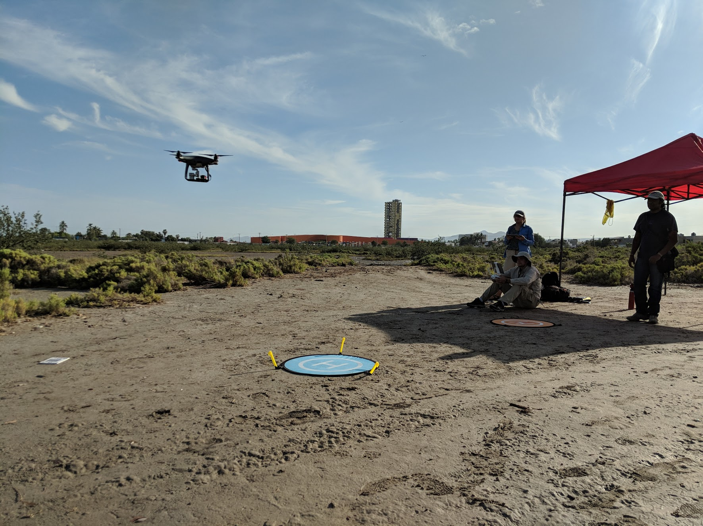
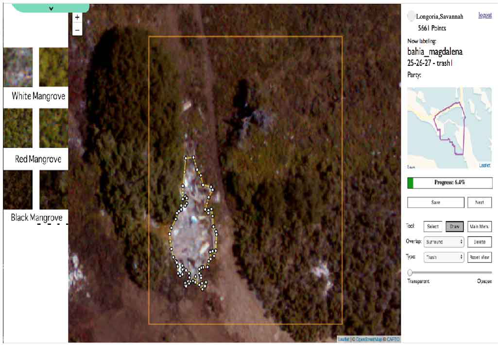

work pipeline
data ACQUISITION
Our automated data collection plan was performing lawn mower flights, selecting low altitude photos for high quality, and randomly distributed low altitude photo collection. In addition to this, we performed calibration processes such as georeferencing control, color Calibration, and multispectral calibration.
Data Processing

Using Agisoft, I created an Orthomosaic of our 5,000+ drone image tiles
machine learning
We created and online labeling tool in Python to work with over a million image samples. I used this data to train my ML algorithms in OpenCV an YoloV3 frameworks.